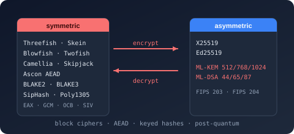

Bodu.Security.Cryptography.Extensions Namespace
- Package

Purpose
Bodu.Security.Cryptography.Extensions holds the extension-method surfaces that compose on top of the BCL cryptography types and the Bodu cipher / hash bases. The types here add convenience methods that keep the cipher / hash usage sites concise without pulling additional dependencies into the core algorithms.
Key types
- SymmetricAlgorithmExtensions - convenience methods on
System.Security.Cryptography.SymmetricAlgorithmfor one-shot encrypt / decrypt over spans and arrays. - SymmetricStreamAlgorithmExtensions - convenience methods on SymmetricStreamAlgorithm for one-shot stream-cipher encrypt / decrypt and span-friendly variants.
- TweakableSymmetricAlgorithmExtensions - convenience methods on TweakableSymmetricAlgorithm - Threefish - including tweak-passing one-shot APIs.
- HashAlgorithmExtensions - convenience methods on
System.Security.Cryptography.HashAlgorithmfor one-shot hashing over spans and string / encoding pairs. - ICryptoTransformExtensions - convenience methods on
System.Security.Cryptography.ICryptoTransformfor one-shot transform-block / transform-final-block use without managing intermediate buffers. - AeadTransformExtensions -
byte[]-returningEncrypt/Decryptoverloads over the stream-cipher AEAD transforms (Poly1305AeadTransform and friends), so callers can seal / open a message without sizing the output span by hand.
Example
using Bodu.Security.Cryptography;
using Bodu.Security.Cryptography.Extensions;
using var blowfish = Blowfish.Create();
blowfish.Key = key;
blowfish.GenerateIV();
blowfish.BlockMode = CipherModeKind.CBC;
blowfish.BlockPadding = PaddingModeKind.PKCS7;
// SymmetricAlgorithmExtensions.Encrypt / Decrypt: one-shot over a span or array -
// creates the transform, runs it, and disposes it for you.
byte[] ciphertext = blowfish.Encrypt(plaintext);
byte[] plain = blowfish.Decrypt(ciphertext);
Notes
- Allocation-aware overloads. Where the BCL surface only ships allocating variants, the extensions add span-based or buffer-passing overloads.
- No new primitives. This namespace adds no new cipher or hash algorithms - it ships only the convenience surfaces. The algorithms themselves live in the parent Bodu.Security.Cryptography namespace.
- See also: the Bodu.Security.Cryptography introduction, the encryption basics guide, the composing primitives guide.
Classes
- AeadBlockCipherModeTransformExtensions
Extends IAeadBlockCipherModeTransform with one-shot encrypt/decrypt overloads that handle the associated-data step, size the output buffer correctly, and return the ciphertext + tag (or recovered plaintext) as a single freshly allocated array.
- AeadTransformExtensions
Provides convenience helpers over IAeadTransform that size the output buffer and return a freshly allocated array, for callers who prefer arrays to caller-supplied spans.
- HashAlgorithmExtensions
Extends HashAlgorithm with incremental input, async hashing of streams, and constant-time verification against expected digests supplied as bytes, spans, memory, or hex strings.
- ICryptoTransformExtensions
Extends ICryptoTransform with one-shot, span/memory-aware, stream-to-stream, and async transform helpers - sized buffers, finalization, and stream pumping rolled into single calls.
- SymmetricAlgorithmExtensions
Extends SymmetricAlgorithm with one-shot encrypt/decrypt of buffers, stream-to-stream pipelines, awaitable async variants, and try-pattern transform creation that surfaces validation failures without exceptions.
- SymmetricStreamAlgorithmExtensions
Extends SymmetricStreamAlgorithm with one-shot encrypt/decrypt of buffers and stream-to-stream pipelines, mirroring the convenience surface offered for block ciphers.
- TweakableSymmetricAlgorithmExtensions
Extends TweakableSymmetricAlgorithm with try-pattern transform creation that surfaces invalid key, IV, or tweak material as a false return rather than a thrown CryptographicException.